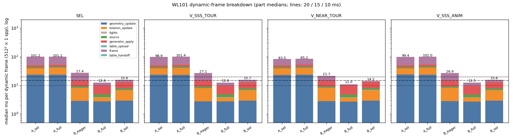
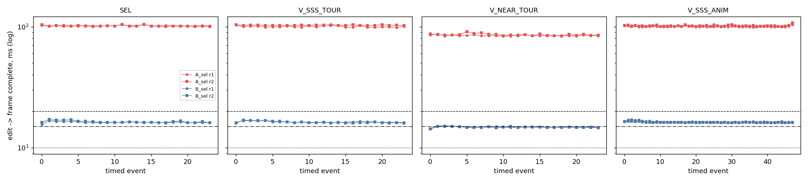
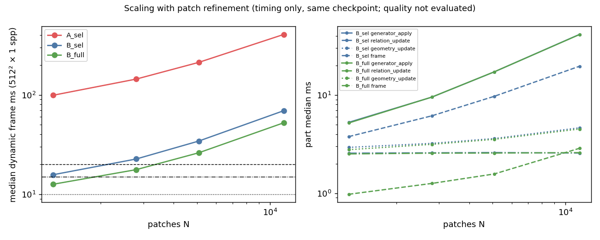
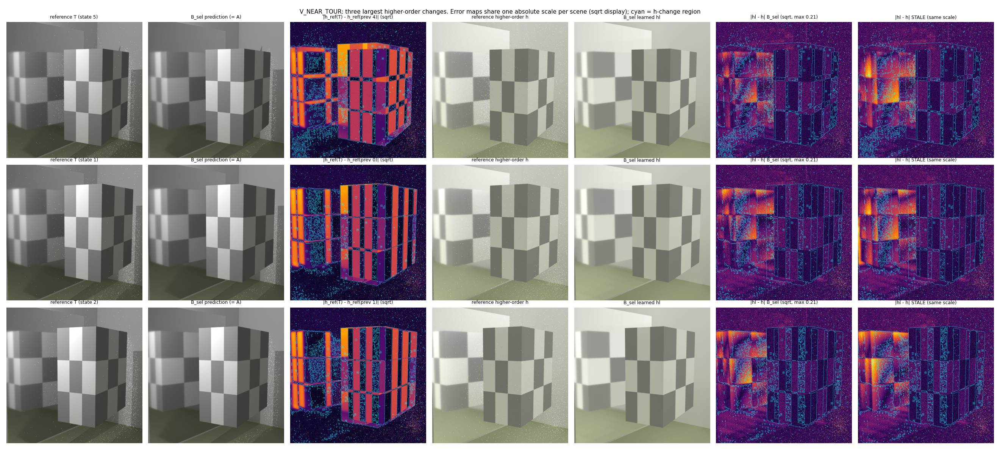
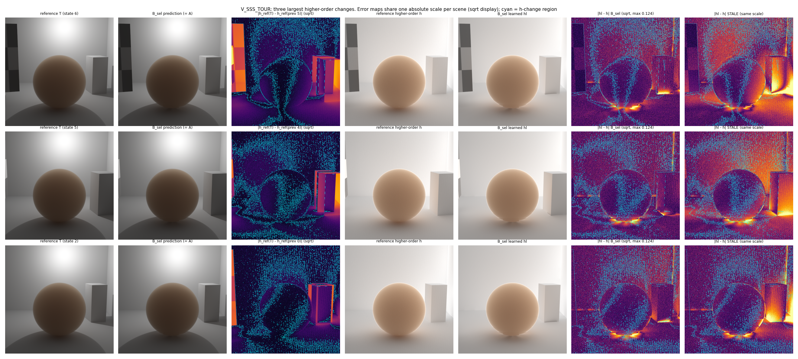

LabServer69, RTX 3090. Arm A = frozen production lifecycle; B_sel = optimized runtime (selective relation update); B_full = optimized runtime with full state rebuild; B_eager = B without kernel replay. Worklog: docs/worklogs/101_WORKLOG_ECRO_DYNAMIC_RELATION_UPDATE_COST.md





Data: analysis101.json, manifest101.json